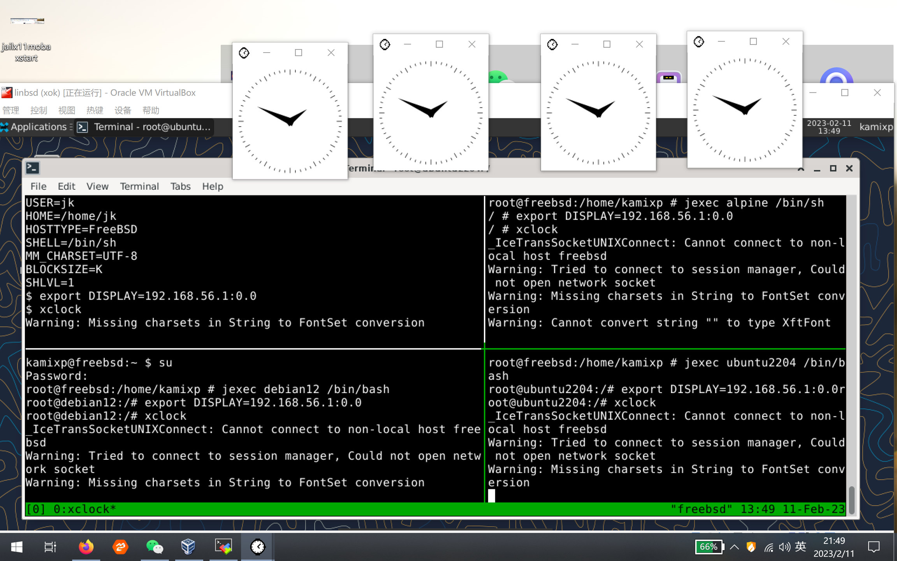
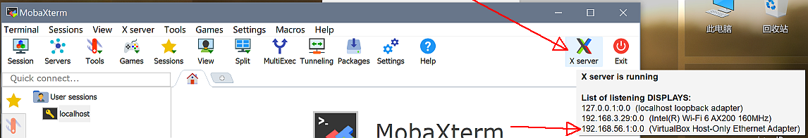
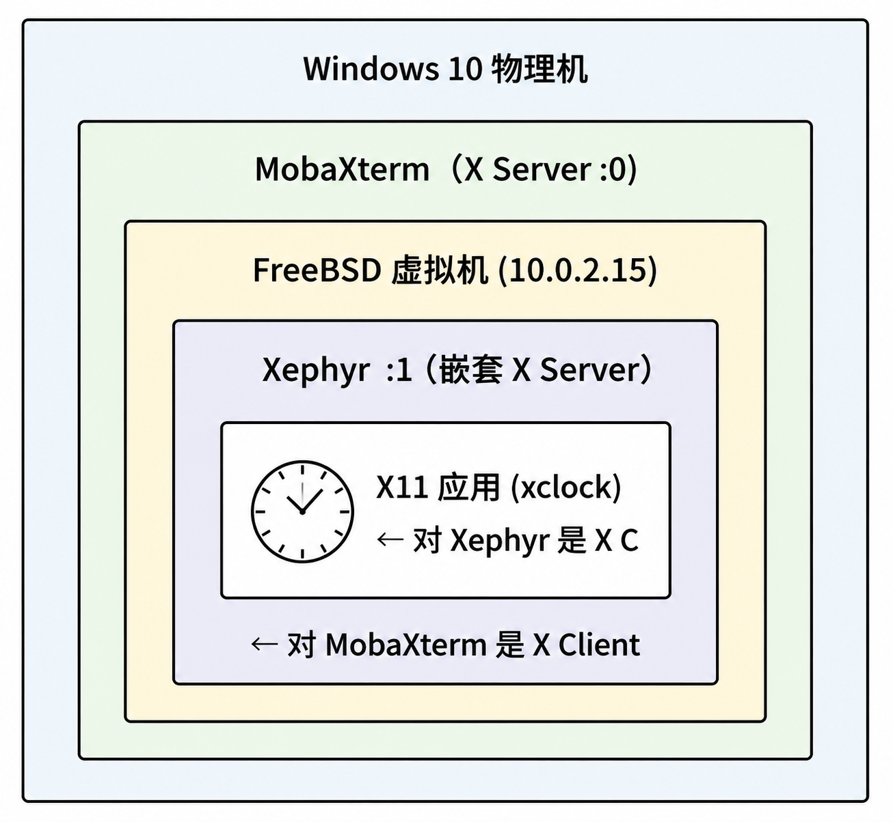
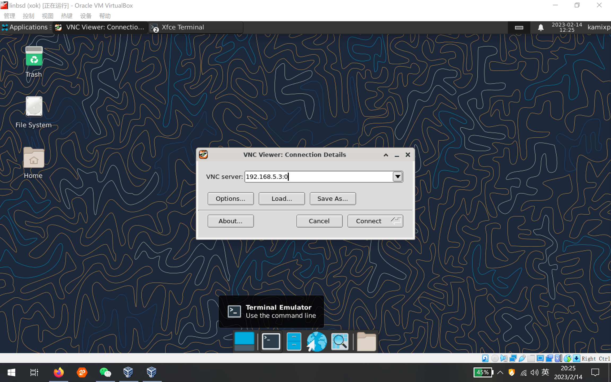
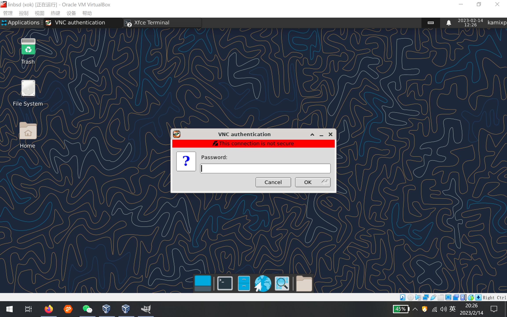
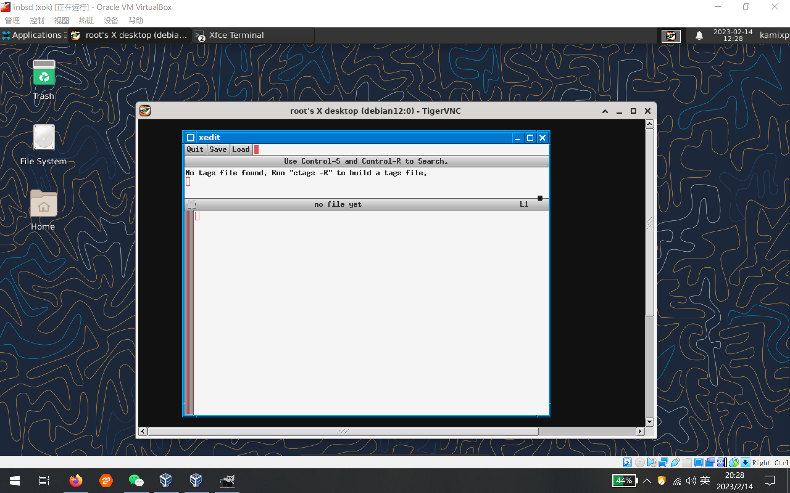

Linux Jail
Table of Contents
Linux Jail 是 FreeBSD 操作系统中的一项功能，用于在 Jail 中运行 Linux 二进制文件和应用程序。其原理是在 FreeBSD 内核中集成兼容层，将 Linux 系统调用 转换为对应的 FreeBSD 原生系统调用
Linux Jail 旨在无需单独部署 Linux 虚拟机或运行环境的情况下，使 FreeBSD 系统能够运行 Linux 软件。 以下介绍在 FreeBSD Jail 中部署 Linux Jail 的初始化配置
准备工作
本节将所有 Jail 绑定到虚拟网络接口 lo1，使其构成 FreeBSD 系统下的一个局域网，其中 FreeBSD 主机充当该局域网的网关
所有 Jail 的网络流量必须通过网络接口 lo1，因此需要启用网络转发
本节使用 pf 防火墙实现此功能 需要配置 pf 防火墙以实现网络访问控制
准备网络接口
添加克隆网络接口 lo1 并启用：
$ sysrc cloned_interfaces+="lo1" $ service netif cloneup
准备 pf 防火墙
提供两种配置方式，可根据需要选用
方案一
pf 防火墙的 表 table 是一种命名结构，用于保存地址和网络的集合，表中的地址可通过 NAT 访问网络
即使没有相关规则引用某表，persist 标志也使防火墙始终保留该表，从而防止防火墙规则重新加载时自动清空该表
编辑 /etc/pf.conf 文件，加入以下配置：
table <jails> persist pass out on em0 inet from <jails> to any nat-to (em0)
实际使用时请将接口名 em0 以及各 Jail 的 IP 地址替换为自己环境中的实际配置
可使用 pfctl 对 jails 表添加或删除条目，以控制网络访问。例如：
- pfctl -t jails -T add 192.168.5.1 将 192.168.5.1 加入 jails 表使其可以访问网络
- pfctl -t jails -T delete 192.168.5.1 将 192.168.5.1 移出 jails 表使其无法访问网络
此方法需手动管理，但灵活性更高
方案二
直接在 /etc/pf.conf 文件中写下规则：
pass out on em0 inet from 192.168.5.1 to any nat-to (em0)
此方法允许 192.168.5.1 访问网络，其特点是规则固化在配置文件中，对于无特殊需求的场景较为便捷
启用 pf 防火墙
即使不使用防火墙规则，也需要启用 pf 服务来实现 NAT 功能
启用 pf 防火墙的方法请参见其他章节
加载 Linux 二进制兼容层（Linuxulator）内核模块
启用并启动 Linux 兼容层服务，该方式能够自动加载 Linux 兼容层所需的各种内核模块：
$ service linux enable $ service linux start
准备目录
创建用于存放 Jail 相关文件的目录：
$ mkdir /usr/jails
文件结构
/usr/jails/ ├── debian/ # Debian 12 Jail 根目录 │ ├── dev/ # devfs 挂载点 │ ├── dev/shm/ # tmpfs 挂载点 │ ├── dev/fd/ # fdescfs 挂载点 │ ├── proc/ # linprocfs 挂载点 │ ├── sys/ # linsysfs 挂载点 │ └── tmp/ # nullfs 挂载点 ├── ubuntu/ # Ubuntu 22.04 Jail 根目录 │ ├── dev/ │ ├── dev/shm/ │ ├── dev/fd/ │ ├── proc/ │ ├── sys/ │ ├── tmp/ │ └── tmp/.X11-unix/ # X11 socket 挂载点 ├── antix/ # antiX Linux Jail 根目录 │ ├── dev/ │ ├── dev/shm/ │ ├── dev/fd/ │ ├── proc/ │ ├── sys/ │ └── tmp/ ├── alpine/ # Alpine Linux Jail 根目录 │ ├── dev/ │ ├── dev/shm/ │ ├── dev/fd/ │ ├── proc/ │ └── sys/ └── freebsd-jail/ # FreeBSD Jail 根目录 /etc/ ├── fstab.debian # Debian Jail 的 fstab 配置 ├── fstab.ubuntu # Ubuntu Jail 的 fstab 配置 ├── fstab.antix # antiX Jail 的 fstab 配置 ├── fstab.alpine # Alpine Jail 的 fstab 配置 ├── jail.conf # Jail 主配置文件 ├── pf.conf # PF 防火墙配置 └── rc.conf # 系统启动配置
Debian Jail
本节基于 Debian 12 配置 Jail
准备基本系统
安装用于构建 Debian/Ubuntu 基本系统的工具:
$ pkg install debootstrap
创建 Jail 路径：
$ mkdir -p /usr/jails/debian
通过中国科学技术大学开源镜像站自举 Debian 12 系统：
$ debootstrap bookworm /usr/jails/debian https://mirrors.ustc.edu.cn/debian/
示例输出如下：
I: Retrieving InRelease I: Retrieving Packages I: Validating Packages I: Resolving dependencies of required packages... I: Resolving dependencies of base packages... I: Checking component main on https://mirrors.ustc.edu.cn/debian... I: Retrieving adduser 3.130 I: Validating adduser 3.130 ... I: Extracting usr-is-merged... I: Extracting util-linux-extra... I: Extracting zlib1g...
输出末尾可能出现与配置相关的提示信息，这是 debootstrap 在 chroot 环境中运行服务配置脚本时的正常现象，不影响基本系统的使用
使用 Debian 12 基本系统创建 Jail 实例，命名为 debian
配置挂载文件
创建 /etc/fstab.debian 文件：
devfs /usr/jails/debian/dev devfs rw 0 0 tmpfs /usr/jails/debian/dev/shm tmpfs rw,size=1g,mode=1777 0 0 fdescfs /usr/jails/debian/dev/fd fdescfs rw,linrdlnk 0 0 linprocfs /usr/jails/debian/proc linprocfs rw 0 0 linsysfs /usr/jails/debian/sys linsysfs rw 0 0 /tmp /usr/jails/debian/tmp nullfs rw 0 0
| 文件系统 | 作用 |
| devfs | 提供设备节点访问 |
| tmpfs | 为共享内存提供临时文件系统 |
| fdescfs | 提供文件描述符访问 |
| linprocfs | 为 Linux 应用提供兼容的 proc 文件系统 |
| linsysfs | 为 Linux 应用提供兼容的 sys 文件系统 |
| nullfs | 挂载宿主机的 tmp 目录 |
管理 Jail 配置文件
在 /etc/jail.conf 文件中，加入以下内容（如果没有则新建）。关键配置项包括：
- devfs_ruleset 定义 devfs 的规则集
- enforce_statfs 控制 Jail 中挂载点的可见性，取值为 0（无限制）、1（仅根目录下可见）或 2（默认，仅根目录所在挂载点可操作）
debian { # Jail 名称
host.hostname = "debian"; # 设置 Jail 的主机名
mount.fstab = "/etc/fstab.debian"; # Jail 使用的 fstab 文件：启动或关闭 Jail 时，挂载或卸载对应的文件系统
path = "/usr/jails/debian"; # Jail 的根目录路径
devfs_ruleset = 4; # Jail 挂载 devfs 的规则集，0 表示无规则集，Jail 会继承上级规则集；
# 仅在启用 allow.mount 和 allow.mount.devfs 且 enforce_statfs 小于 2 时可挂载 devfs
enforce_statfs = 1; # 设置为 0：所有挂载点可用，无限制
# 设置为 1：仅 Jail 根目录下的挂载点可见，且路径前缀中的 Jail 根目录部分会被剥离（例如 /usr/jails/debian/mnt 在 Jail 内显示为 /mnt）
# 设置为 2（默认）：只能在 Jail 根目录所在挂载点操作，无法挂载 devfs、tmpfs 等
allow.mount; # 允许挂载文件系统
allow.mount.devfs; # 允许挂载 devfs
exec.start = "/bin/true"; # Jail 启动时执行的命令
exec.stop = "/bin/true"; # Jail 停止时执行的命令
persist; # 允许 Jail 在无任何进程情况下仍然存在
allow.raw_sockets; # 允许使用 raw Socket，例如 ping
interface = "lo1"; # 使用 lo1 作为网络接口
ip4.addr = 192.168.5.1; # 指定 IPv4 地址
ip6 = "disable"; # 禁用 IPv6
}
exec.start 指定启动 Jail 时运行的命令
在 FreeBSD 中创建 Jail 时，一般使用 exec.start = 'sh /etc/rc' 来调用 rc 系统启动服务 Debian 使用 systemd 作为初始化系统，而 Jail 缺少必要的 cgroup 挂载和系统权限，无法使用 systemd，因此无法直接运行相应命令（但 service 命令仍可使用）
此处使用 /bin/true 安全返回 true（成功状态），不执行任何操作
例如，在 debian Jail 中启用 sshd 服务后（执行 service ssh start），重启 Jail 时 sshd 服务不会随 Jail 自动启动 此时可设置 exec.start = 'service ssh start'，以确保启动 Jail 时自动启动 sshd 服务
要启用更多服务，可按如下方式编写。要启用更多服务，可按如下方式编写：
exec.start += 'service ssh start' exec.start += 'service dbus start'
exec.stop 指定停止 Jail 时运行的命令
FreeBSD Jail 通常使用 sh /etc/rc.shutdown 同样由于 systemd 的限制，此处使用 /bin/true 安全返回 true
管理防火墙放行网络
在 pf 防火墙中的 jails 表中加入 Jail 的地址，以允许 Jail 访问网络：
$ pfctl -t jails -T add 192.168.5.1
启用实例
启动 Jail：
$ jail -c debian
停止 Jail：
$ jail -r debian
更新 Debian 系统
在 Jail 内部更新
执行以下命令进入 Jail 并更新系统：
$ jexec debian /bin/bash # 此时位于 FreeBSD Debian # apt remove rsyslog # 此时位于 Debian Jail Debian # apt update # 此时位于 Debian Jail
在 Jail 外部更新
# 在 debian Jail 内执行命令，卸载 rsyslog $ jexec -l debian /bin/bash -c "apt remove rsyslog" # 在 debian Jail 内执行命令，更新软件包索引 $ jexec -l debian /bin/bash -c "apt update"
Jail 服务管理
开机时启动 jail 服务：
$ service jail enable
默认情况下会启动 /etc/jail.conf 文件中配置的所有 Jail
也可在 /etc/rc.conf 文件中用 jail_list 变量指定在开机时启动的 Jail 的名称，编辑 /etc/rc.conf 文件写入：
jail_list="debian"
或执行：
$ sysrc jail_list+=debian
如果 jail_list 变量为空，则会启动所有在 /etc/jail.conf 文件中配置的 Jail
Alpine Jail
创建 Alpine Jail 基本系统
# 下载 Alpine Linux 3.17.1 minirootfs 镜像 $ fetch https://mirrors.ustc.edu.cn/alpine/v3.17/releases/x86_64/alpine-minirootfs-3.17.1-x86_64.tar.gz # 创建 Alpine Jail 根目录 $ mkdir -p /usr/jails/alpine # 解压 minirootfs 到 Jail 根目录 $ tar zxf alpine-minirootfs-3.17.1-x86_64.tar.gz -C /usr/jails/alpine/ # 创建必要的设备节点 $ touch /usr/jails/alpine/dev/shm $ touch /usr/jails/alpine/dev/fd
管理挂载文件
创建 /etc/fstab.alpine 文件。其中 /tmp 挂载已被注释，避免将整个宿主机 /tmp 目录暴露给 Jail，以提高安全性：
devfs /usr/jails/alpine/dev devfs rw 0 0 tmpfs /usr/jails/alpine/dev/shm tmpfs rw,size=1g,mode=1777 0 0 fdescfs /usr/jails/alpine/dev/fd fdescfs rw,linrdlnk 0 0 linprocfs /usr/jails/alpine/proc linprocfs rw 0 0 linsysfs /usr/jails/alpine/sys linsysfs rw 0 0 #/tmp /usr/jails/alpine/tmp nullfs rw 0 0 # 注释掉可避免将整个宿主机 /tmp 目录暴露给 Jail
管理 Jail 模板
在 /etc/jail.conf 文件中写入：
alpine { # Jail 名称
host.hostname = "alpine"; # 设置 Jail 的主机名
mount.fstab = "/etc/fstab.alpine"; # Jail 使用的 fstab 文件
path = "/usr/jails/alpine"; # Jail 根目录路径
devfs_ruleset = 4; # devfs 挂载规则集
enforce_statfs = 1; # 设置挂载点可见性
allow.mount; # 允许挂载文件系统
allow.mount.devfs; # 允许挂载 devfs
exec.start = "/bin/true"; # minirootfs 中未初始化系统，暂时使用 /bin/true，后续会设置 openrc
exec.stop = "/bin/true"; # 停止时使用 /bin/true
persist; # 即使无进程也保持 Jail 存活
allow.raw_sockets; # 允许使用 raw Socket
interface = "lo1"; # 指定网络接口
ip4.addr = 192.168.5.4; # 分配 IPv4 地址
ip6 = "disable"; # 禁用 IPv6
}
设置开机时启动，随后立即启动：
$ sysrc jail_list+="alpine" $ jail -c alpine
防火墙放行网络
在 pf 防火墙中允许网络访问，与前述方法相同：
$ pfctl -t jails -T add 192.168.5.4
为基本系统配置 OpenRC
进入 Jail。minirootfs 仅提供基础环境，安装 OpenRC 可获得完整的服务管理能力：
freebsd $ jexec alpine /bin/sh # 初始仅有 sh，请留意 Shell 提示符的变化 alpine # sed -i 's/dl-cdn.alpinelinux.org/mirrors.ustc.edu.cn/' /etc/apk/repositories # 修改镜像地址 alpine # echo 'nameserver 223.5.5.5' >> /etc/resolv.conf # 初始没有此文件，需自行创建 alpine # apk update # minirootfs 可直接运行程序，但无法管理服务，需安装 OpenRC 以获得完整的服务管理能力 alpine # apk add openrc # 安装 OpenRC 作为初始化系统 alpine # mkdir /run/openrc # 创建 OpenRC 运行目录 alpine # touch /run/openrc/softlevel # 在 Docker、Chroot 或 Jail 环境中使用 OpenRC 时建议创建此文件 alpine # exit # 留意 Shell 提示符的变化 FreeBSD $ jail -r alpine # 先关闭 Alpine Jail，以便在 FreeBSD 宿主机中配置 OpenRC
修改 /etc/jail.conf 文件中 Alpine 的配置：
alpine { # Jail 名称
host.hostname = "alpine"; # 设置 Jail 的主机名
mount.fstab = "/etc/fstab.alpine"; # Jail 使用的 fstab 文件
path = "/usr/jails/alpine"; # Jail 根目录路径
devfs_ruleset = 4; # devfs 挂载规则集
enforce_statfs = 1; # 设置挂载点可见性
allow.mount; # 允许挂载文件系统
allow.mount.devfs; # 允许挂载 devfs
exec.start = "/sbin/openrc default"; # 使用 OpenRC 初始化系统，启动 default 运行级别
exec.stop = "/sbin/openrc shutdown"; # 使用 OpenRC 初始化系统，执行 shutdown 运行级别任务
persist; # 即使无进程也保持 Jail 存活
allow.raw_sockets; # 允许使用 raw Socket
interface = "lo1"; # 指定网络接口
ip4.addr = 192.168.5.4; # 分配 IPv4 地址
ip6 = "disable"; # 禁用 IPv6
}
重启 alpine Jail：
$ jail -c alpine
Linux Jail 中的 GUI
Jail 中的 GUI
本节示例环境为 Windows 10 物理机，在 VirtualBox 中安装了 FreeBSD 13.1 虚拟机 在 FreeBSD 虚拟机中已部署 4 个 Jail。其中包含一个 FreeBSD Jail，为区别于 VirtualBox 中的 FreeBSD 虚拟机，称其为 freebsd-jail
Windows 10 物理机 → FreeBSD 13.1 虚拟机 → FreeBSD Jail（freebsd-jail）+ debian Jail + Ubuntu Jail + Alpine Jail
$ jls JID IP Address Hostname Path 1 192.168.5.1 debian /usr/jails/debian 2 192.168.5.2 ubuntu /usr/jails/ubuntu 3 192.168.5.4 alpine /usr/jails/alpine 4 192.168.5.5 freebsd-jail /usr/jails/freebsd-jail
目录结构：
/usr/jails/ ├── debian/ # JID 1, IP 192.168.5.1 ├── ubuntu/ # JID 2, IP 192.168.5.2 ├── alpine/ # JID 3, IP 192.168.5.4 └── freebsd-jail/ # JID 4, IP 192.168.5.5
在 4 个 Jail 中分别安装 xclock、Firefox、Chrome 和 jwm，其中 jwm 用于界面管理。Alpine 中 VNC 方法未能调试成功，Firefox 和 Chrome 也未能运行，但 xclock、xterm 等可正常运行
无需安装 xorg
在 Ubuntu 22.04 中，Firefox 默认以 snap 包形式分发，snap 依赖 systemd，无法在 Jail 中使用，因此需使用 deb 包安装。Chrome 在 Ubuntu 中仅提供 deb 包，不依赖 snap，可直接安装。方法如下：
# 下载 Google Chrome 稳定版安装包 $ wget https://dl.google.com/linux/direct/google-chrome-stable_current_amd64.deb # 使用 dpkg 安装下载的 deb 包 $ dpkg -i google-chrome-stable_current_amd64.deb # 如果 dpkg 安装有依赖问题，可使用 apt 安装本地 deb 包并自动处理依赖 $ apt install ./google-chrome-stable_current_amd64.deb
带 X Server 的终端
使用 MobaXterm。MobaXterm 采用默认配置，无需额外配置

确保 X server 已经启用，记录 DISPLAY 值，格式是 hostname:displaynumber.screennumber
这里是 192.168.56.1:0.0
登录 Jail（登录方式不限、用户不限）：
$ export DISPLAY=192.168.56.1:0.0 # Jail 中，此处为 sh/zsh/bash。csh/tcsh 是 setenv DISPLAY 192.168.56.1:0.0，下同 $ xclock& # 在后台运行 xclock

内嵌 X Server
Xnest/Xephyr 是嵌套式 X Server 技术
- 对 X11 应用而言是 X Server
- 对宿主 X Server 而言是 X Client
这种嵌套结构可在一个 X 窗口中运行另一个完整的 X 会话

在 FreeBSD 虚拟机里安装 Xnest 或 Xephyr。选择其中一种即可：
$ pkg install xorg-nestserver
或：
$ pkg install xephyr
在 FreeBSD 中启用：
$ Xephyr :1 -listen tcp
参数说明：
:1 即 DISPLAY 值中的 displaynumber
FreeBSD 系统 IP 为 10.0.2.15，故完整的 DISPLAY 值为 10.0.2.15:1.0 因为 FreeBSD 系统 X Server 的 displaynumber 值为 0，故从 1 开始
- -listen tcp 监听 TCP 端口
在 Jail 中，使用与前述相同的方法：
$ export DISPLAY=10.0.2.15:1.0
$ xclock&
四个 Jail 可以同时在 FreeBSD 开启的一个 Xnest/Xephyr 窗口中打开 xclock 但此时没有窗口管理器，xclock 缺少窗口装饰和基本交互功能
可在执行 xclock 前先执行 jwm，如下：
$ export DISPLAY=10.0.2.15:1.0
$ jwm &
$ xclock&
jwm 执行一次即可，无需在每个 Jail 中分别执行 此处使用 jwm 是因为其轻量级，Xfce 等桌面环境也可使用，可根据需要选用
共享主机 socket 方式
先在 FreeBSD 系统上执行：
$ xhost +
xhost + 将关闭访问控制，存在安全风险 更安全的方式是指定允许访问的 IP 地址
随后在 Jail 的 fstab 文件中加入下面内容，以 ubuntu Jail 的 fstab 为例，其他 Jail 参照修改即可：
/tmp/.X11-unix /usr/jails/ubuntu/tmp/.X11-unix nullfs ro 0 0
必要时先 mkdir -p /usr/jails/ubuntu/tmp/.X11-unix，确保有挂载点
重启 jail 后，在 jail 中执行：
$ export DISPLAY=:0.0
$ xclock &
前文提到 fstab 文件中有下面这样一行：
#/tmp /usr/jails/ubuntu/tmp nullfs rw 0 0
该写法将 FreeBSD 的 /tmp 目录暴露给 Jail 并且可读写，破坏隔离性，因此予以注释
而仅挂载 tmp.X11-unix 可显著提高安全性
X Server TCP 监听加 xhost 连接管理
此处使用 SDDM 桌面管理器，如果使用其他桌面管理器，请参考相应文档，原理相同
在 FreeBSD 内编辑或新建 /usr/local/etc/sddm.conf 文件，修改 ServerArguments 内容如下：
[X11]
ServerArguments=-listen tcp
重启后，在 FreeBSD 上用以下方式加入 Jail IP 以允许访问：
$ xhost + 192.168.5.1
这种方式比 xhost + 更安全，仅允许指定 IP 访问
随后在 Jail 中，执行：
$ export DISPLAY=:0.0
$ xclock &
将 DISPLAY 设为 :0.0、127.0.0.1:0.0、10.0.2.15:0.0 均可正常使用，上述几种方法均可尝试
VNC
在 Debian Jail 中安装 VNC 服务器，可使用 tightvncserver
以 Debian Jail 为例，在 Jail 中执行：
# apt install tightvncserver $ vncpasswd Password: Verify: Would you like to enter a view-only password (y/n)? n A view-only password is not used $ vncserver :0
vncserver 的端口号为 5900 加上冒号后的数字，此处为 5900，:1 端口号为 5901，以此类推
使用 VNC 客户端登录 Jail：



附录与补遗
- TCP 监听默认关闭的原因之一是宿主机 X Server 通过 TCP 监听配合 xhost 连接管理的方式安全性较差
共享宿主机 Socket 的方式，需注意仅挂载 tmp.X11-unix 而非整个 /tmp，并使用 xhost +指定 IP 而非 xhost +
满足这两点即可保障安全性
带 X Server 的终端、共享主机 Socket、VNC 这三种方式值得推荐
无论采用哪种方式，Linux Jail 中的兼容性均存在一定限制，并非所有 X 应用都能运行 相比之下，FreeBSD Jail 的兼容性则更好
除共享宿主机 Socket 的方法外，其余方法同样可在非 Jail 环境中使用
| Previous: Qjail | Home: Jail 容器管理 |